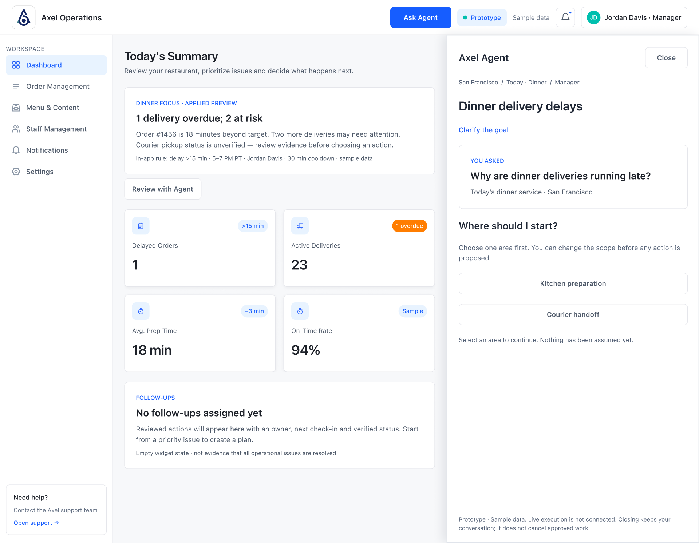
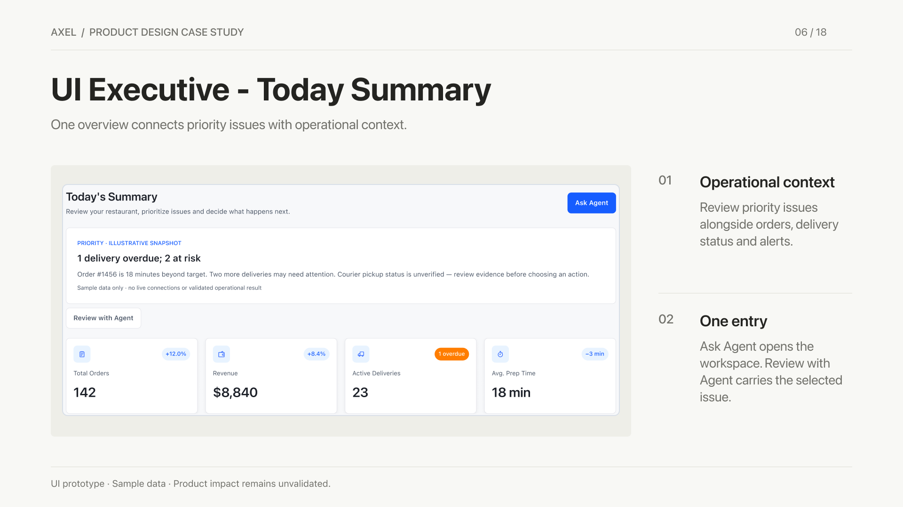
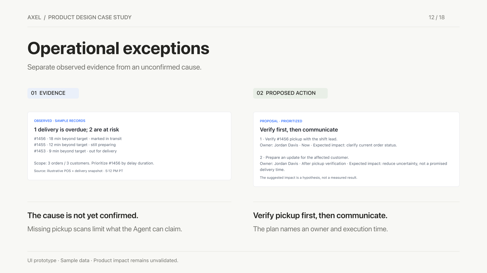
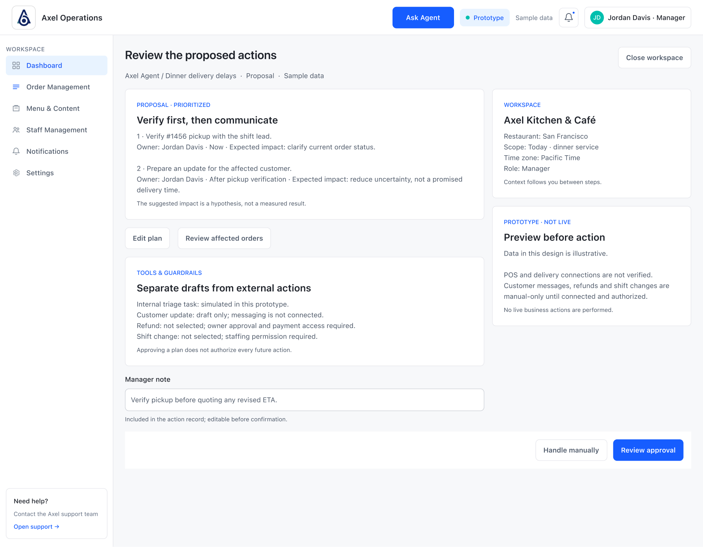
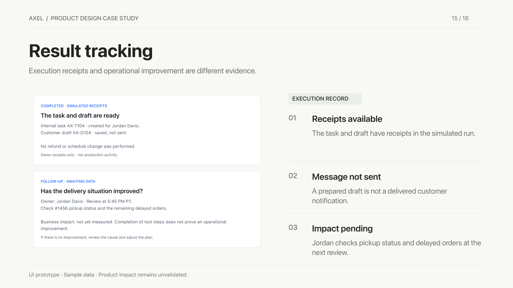

Scattered information
Important signals lived across operational tools and delivery channels.
AXEL / RESTAURANT OPERATIONS
A daily overview and AI-assisted workspace that help restaurant managers understand what needs attention—and stay in control of what happens next.

01 / STARTING WITH RESTAURANT WORK
I began by interviewing restaurant owners and managers about their POS experience: how they monitored the restaurant, handled orders, and decided what to do during service.
The recurring problem in the project’s research was fragmentation. The POS supported restaurant operations, while delivery-platform orders added another stream of information. Managers had to assemble the picture themselves.
Important signals lived across operational tools and delivery channels.
Seeing an order status did not explain which issue needed attention first.
The opportunity was a shared overview that supported a decision, beyond displaying more data.
02 / THE FIRST RESPONSE
I used Toast’s structure as a reference while developing Axel’s own brand and a new summary experience. The design brought priority issues, key operating signals, and order context into one overview.
My design focus: establish a useful hierarchy—what needs attention, what explains it, and where to look next. The reference informed the starting structure; the summary and subsequent Agent exploration are the focus of this case.

03 / THE TURNING POINT
In the project’s qualitative feedback, Today’s Summary helped with parts of people and cross-platform order management. But setting up the view still took time.
That changed my design question: could an assistant help managers configure the overview and work through urgent issues, while leaving decisions with the manager?
Evidence boundary: this is qualitative feedback on the Summary, as described in the project story. It does not validate the later Agent concept or establish a measured business improvement.
04 / DEFINE ACTION
Define Action extends the overview into guided assistance: prepare the workspace before service, and work through an exception when service gets complicated.
A / PREPARE THE WORKSPACE
Guide the manager through choosing a goal, reviewing the proposed dashboard configuration, and confirming changes. Preview and recovery make the setup easier to inspect.
B / HANDLE AN EXCEPTION
Start from a delivery issue, establish the scope, examine evidence, and propose a next step. The manager can edit the plan, approve it, or handle it manually.
The revised navigation places Ask Agent in the global header. Clarification and evidence stay in a right-side drawer, while the dashboard reflows beside it. The Agent expands only when reviewing a plan needs more room.
An overdue delivery does not establish its cause. Missing pickup information leads to a verification step before promising a new arrival time to a customer.

05 / CONTROL, APPROVAL & RECOVERY
The expanded workspace gives the plan room to name an owner, timing, and expected effect. Tool actions and guardrails sit alongside the proposal so the manager can review both together.
Preparing a customer draft, issuing a refund, and changing a shift have different consequences. The design separates these actions and makes permission and approval requirements visible.

Minimizing the workspace should preserve the task and offer Resume task. Cancellation is a separate decision.
Partial failure should distinguish successful and failed actions, with retry, manual handling, and cancellation paths.
A simulated receipt confirms a prototype step. It does not prove that delivery performance improved.

06 / WHAT I LEARNED
Starting with the POS experience surfaced a wider management problem. Interviews helped connect interface decisions to the work of coordinating people, orders, and delivery channels.
The Summary addressed visibility, but setup effort remained. That unresolved friction gave the Agent exploration a concrete purpose. AI assistance still needs its own evaluation.
A useful plan needs an equally clear path to edit, pause, decline, or recover. The later navigation iteration keeps these choices close to the manager’s working context.
NEXT VALIDATION
Compare setting up a shift view and responding to a delayed delivery. Observe completion, setup effort, understanding of uncertainty, and whether managers can correctly distinguish a draft, an approved action, and a completed action. These outcomes remain to be measured.
EXPLORE THE DESIGN
The UI above uses dated exports of the existing design. The linked Figma file remains the source of truth.
Source note · Live Figma verification is pending. The minimized-state section is linked; a current visual export is not included on this page.